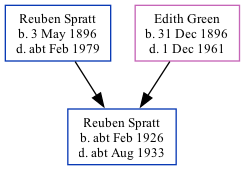

Reuben A Spratt cFeb 1926 - c1933 [ Home ] | [ Calendar ] | [ Surnames Index ] | [ Family History ]The child of Reuben Spratt (an agricultural laborer) and Edith Green Reuben Spratt , the first cousin once-removed on the father's side of Nigel Horne , was born in Thanet, Kent, England c. Feb 19261,2 .
He died in Thanet c. Aug 19332,3 .
Parents Reuben was born on May 3, 1896Edith Maud Caroline was born on Dec 31, 1896Citations England & Wales births 1837-2006 - Findmypast England & Wales, Death Index: 1984-2005 Online publication - Provo, UT, USA: The Generations Network, Inc., 2007.Original data - General Register Office. England and Wales Civil Registration Indexes. London, England: General Register Office. © Crown copyright. Published by permission of the Cont England & Wales deaths 1837-2007 - Findmypast Media England & Wales deaths 1837-2007 - BMD/D/1933/3/AZ/000756/121 England & Wales births 1837-2006 - BMD/B/1926/1/AZ/001201/065 Family Tree Map
Generated by Ged2Site . Last updated on Apr 1, 2025